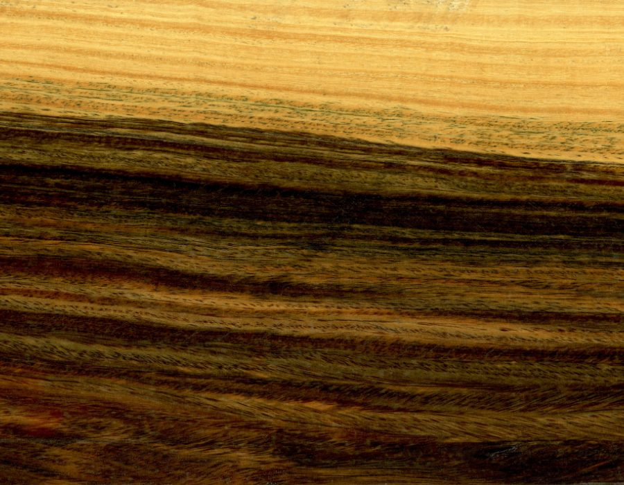

Maderas nativas argentinasN.º 1
Palo santo
Bulnesia sarmientoi · Zigofiláceas

- Otros nombres
- Guayacán, palo bálsamo; en el comercio, verawood o Argentine lignum vitae
- Dónde crece
- Chaco, Formosa y Salta, y algo en Santiago del Estero: solo en el Gran Chaco
- Color
- Verde oliva a pardo; perfumada
- Peso
- Unos 1.200 kg/m³; se hunde
- Dureza
- Muy dura (Janka 17.230 N)
- Durabilidad
- No se pudre enterrada
- En el taller
- Aceitosa: cuesta encolar y terminar
- Protección
- CITES, Apéndice II (2010)
Florece en octubre y noviembresoydemadera.com